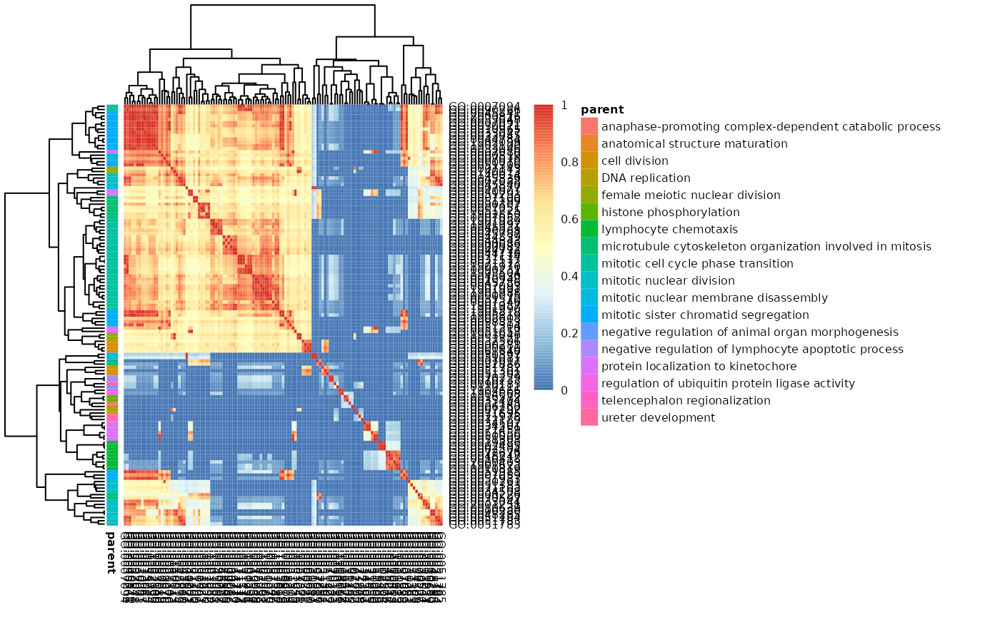
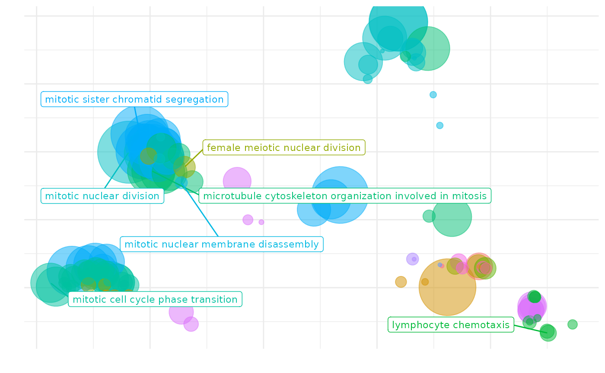
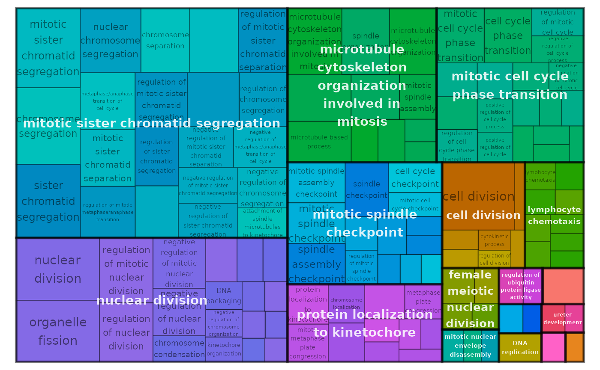
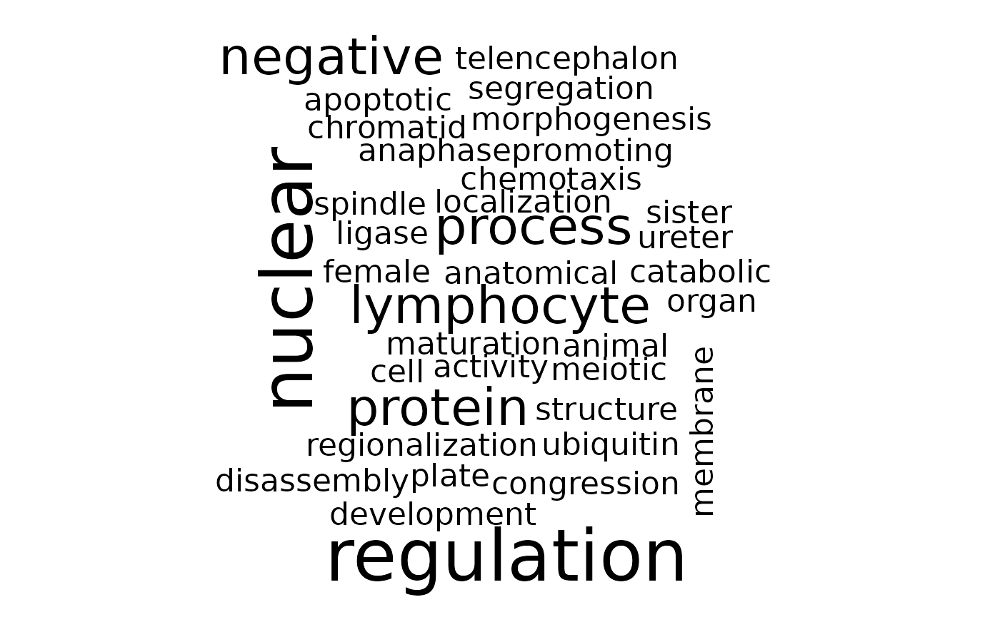

Using the rrvgo package
Sergi Sayols
2020-11-16
rrvgo.RmdIntroduction to rrvgo
Gene Ontologies (GO) are often used to guide the interpretation of high-throughput omics experiments, with lists of differentially regulated genes being summarized into sets of genes with a common functional representation. Due to the hierachical nature of Gene Ontologies, the resulting lists of enriched sets are usually redundant and difficult to interpret.
rrvgo aims at simplifying the redundance of GO sets by grouping similar terms based on their semantic similarity. It also provides some plots to help with interpreting the summarized terms.
This software is heavily influenced by REVIGO. It mimics a good part of its core functionality, and even some of the outputs are similar. Without aims to compete, rrvgo tries to offer a programatic interface using available annotation databases and semantic similarity methods implemented in the Bioconductor project.
Using rrvgo
Getting started
Starting with a list of genes of interest (eg. coming from a differential expression analysis), apply any method for the identification of eneriched GO terms (see GOStats or GSEA).
rrvgo does not care about genes, but GO terms. The input is a vector of enriched GO terms, along with (recommended, but not mandatory) a vector of scores. If scores are not provided, rrvgo takes the GO term (set) size as a score, thus favoring broader terms.
Calculating the similarity matrix and reducing GO terms
First step is to get the similarity matrix between terms. The function calculateSimMatrix takes a list of GO terms for which the semantic simlarity is to be calculated, an OrgDb object for an organism, the ontology of interest and the method to calculate the similarity scores.
library(rrvgo)
go_analysis <- read.delim(system.file("extdata/example.txt", package="rrvgo"))
simMatrix <- calculateSimMatrix(go_analysis$ID,
orgdb="org.Hs.eg.db",
ont="BP",
method="Rel")The semdata parameter (see ?calculateSimMatrix) is not mandatory as it is calculated on demand. If the function needs to run several times with the same organism, it’s advisable to save the GOSemSim::godata(orgdb, ont=ont) object, in order to reuse it between calls and speedup the calculation of the similarity matrix.
From the similarity matrix one can group terms based on similarity. rrvgo provides the reduceSimMatrix function for that. It takes as arguments i) the similarity matrix, ii) an optional named vector of scores associated to each GO term, iii) a similarity threshold used for grouping terms, and iv) an orgdb object.
scores <- setNames(-log10(go_analysis$qvalue), go_analysis$ID)
reducedTerms <- reduceSimMatrix(simMatrix,
scores,
threshold=0.7,
orgdb="org.Hs.eg.db")reduceSimMatrix selects as the group representative the term with the higher score within the group. In case the vector of scores is not available, reduceSimMatrix will get the GO term size from the OrgDb object and use it as the score, thus favoring broader terms. Please note that scores are interpreted in the direction that higher are better, therefore if you use p-values as scores, minus log-transform them before.
Higher thresholds force higher similarity between terms of a groups, resulting in more groups containing less similar terms.
Plotting and interpretation
rrvgo provides several methods for plotting and interpreting the results.
Similarity matrix heatmap
Plot similarity matrix as a heatmap, with clustering of columns of rows turned on by default (thus arranging together similar terms).
heatmapPlot(simMatrix,
reducedTerms,
annotateParent=TRUE,
annotationLabel="parentTerm",
fontsize=6)
The function internally uses pheatmap, and further parameters can be passed to this function.
Scatter plot depicting groups and distance between terms
Plot GO terms as scattered points. Distances between points represent the similarity between terms, and axes are the first 2 components of applying a PCoA to the (di)similarity matrix. Size of the point represents the provided scores or, in its absence, the number of genes the GO term contains.
scatterPlot(simMatrix, reducedTerms)
Treemap plot
Treemaps are space-filling visualization of hierarchical structures. The terms are grouped (colored) based on their parent, and the space used by the term is proportional to the score. Treemaps can help with the interpretation of the summarized results and also comparing differents sets of GO terms.
treemapPlot(reducedTerms)
The function internally uses treemap, and further parameters can be passed to this function.
Word cloud
Word clouds are visualizations which reproduce a text putting emphasis to words which appear frequently in a text. They can help to identify processes and functions that happen more commonly in a set of enriched GO terms, as well as comparing between different sets.
wordcloudPlot(reducedTerms, min.freq=1, colors="black")
The function internally uses wrodcloud, and further parameters can be passed to this function.
Shiny app
To make the software more accessible to a non-technical audience, rrvgo packages a shiny app which can be accessed calling the shiny_rrvgo() function from the R console.
rrvgo::shiny_rrvgo()
shiny_app
The app offers interactive access to the plots and tables calculated by rrvgo.
Currently supported
Similarity methods
All similarity measures available are those implemented in the GOSemSim package, namely the Resnik, Lin, Relevance, Jiang and Wang methods. See the Semantic Similarity Measurement Based on GO section from the GOSeSim documentation for more details.
Organisms
Bioconductor current provides OrgDb objects for 20 species provided by the following packages:
| Package | Organism |
|---|---|
| org.Ag.eg.db | Anopheles |
| org.At.tair.db | Arabidopsis |
| org.Bt.eg.db | Bovine |
| org.Ce.eg.db | Worm |
| org.Cf.eg.db | Canine |
| org.Dm.eg.db | Fly |
| org.Dr.eg.db | Zebrafish |
| org.EcK12.eg.db | E coli strain K12 |
| org.EcSakai.eg.db | E coli strain Sakai |
| org.Gg.eg.db | Chicken |
| org.Hs.eg.db | Human |
| org.Mm.eg.db | Mouse |
| org.Mmu.eg.db | Rhesus |
| org.Mxanthus.db | Myxococcus xanthus DK 1622 |
| org.Pf.plasmo.db | Malaria |
| org.Pt.eg.db | Chimp |
| org.Rn.eg.db | Rat |
| org.Sc.sgd.db | Yeast |
| org.Ss.eg.db | Pig |
| org.Xl.eg.db | Xenopus |
If the organism is not supported in Bioconductor, you can still build your own OrgDb object usign the AnnotationForge package and rendering the necessary data for semantic similarity using the GOSemSim package with:
my_new_fancy_orgdb_object <- 'org.Zz.eg.db'
hsGO <- GOSemSim::godata(my_new_fancy_orgdb_object, ont="MF")Demo data
Taken as is from the DOSE package, which was derived from the R package breastCancerMAINZ. It contains 200 samples with breast cancer at different grades (I, II and III). The dataset basically contains log2 ratios of the geometric means of grade III vs. grade I samples ( 34 vs. 29 repectively).
Citing rrvgo
Please consider citing rrvgo if used in support of your own research:
citation("rrvgo")##
## Sergi Sayols (2020). rrvgo: a Bioconductor package to reduce and
## visualize Gene Ontology terms
##
## A BibTeX entry for LaTeX users is
##
## @Manual{,
## title = {rrvgo: a Bioconductor package to reduce and visualize Gene Ontology terms},
## author = {Sergi Sayols},
## year = {2020},
## url = {https://ssayols.github.io/rrvgo},
## }Reporting problems or bugs
If you run into problems using rrvgo, the Bioconductor Support site is a good first place to ask for help. If you think there is a bug or an unreported feature, you can report it using the rrvgo github site.
Session info
The following package and versions were used in the production of this vignette.
## R version 4.0.3 (2020-10-10)
## Platform: x86_64-pc-linux-gnu (64-bit)
## Running under: Ubuntu 20.04.1 LTS
##
## Matrix products: default
## BLAS: /usr/lib/x86_64-linux-gnu/blas/libblas.so.3.9.0
## LAPACK: /usr/lib/x86_64-linux-gnu/lapack/liblapack.so.3.9.0
##
## locale:
## [1] LC_CTYPE=en_US.UTF-8 LC_NUMERIC=C
## [3] LC_TIME=en_US.UTF-8 LC_COLLATE=en_US.UTF-8
## [5] LC_MONETARY=en_US.UTF-8 LC_MESSAGES=en_US.UTF-8
## [7] LC_PAPER=en_US.UTF-8 LC_NAME=C
## [9] LC_ADDRESS=C LC_TELEPHONE=C
## [11] LC_MEASUREMENT=en_US.UTF-8 LC_IDENTIFICATION=C
##
## attached base packages:
## [1] stats graphics grDevices utils datasets methods base
##
## other attached packages:
## [1] rrvgo_1.2.1 knitr_1.30 BiocStyle_2.16.1
##
## loaded via a namespace (and not attached):
## [1] ggrepel_0.8.2 Rcpp_1.0.5 GO.db_3.11.4
## [4] assertthat_0.2.1 rprojroot_1.3-2 digest_0.6.26
## [7] gridBase_0.4-7 mime_0.9 slam_0.1-47
## [10] R6_2.4.1 backports_1.1.10 stats4_4.0.3
## [13] RSQLite_2.2.1 evaluate_0.14 ggplot2_3.3.2.9000
## [16] pillar_1.4.6 rlang_0.4.8 data.table_1.13.0
## [19] blob_1.2.1 S4Vectors_0.26.1 rmarkdown_2.4
## [22] pkgdown_1.6.1 labeling_0.3 textshaping_0.2.1
## [25] desc_1.2.0 stringr_1.4.0 igraph_1.2.6
## [28] treemap_2.4-2 pheatmap_1.0.12 bit_4.0.4
## [31] munsell_0.5.0 shiny_1.5.0 compiler_4.0.3
## [34] httpuv_1.5.4 xfun_0.18 pkgconfig_2.0.3
## [37] systemfonts_0.3.2 BiocGenerics_0.34.0 htmltools_0.5.0
## [40] tidyselect_1.1.0 tibble_3.0.4 bookdown_0.21
## [43] IRanges_2.22.2 codetools_0.2-18 crayon_1.3.4
## [46] dplyr_1.0.2 later_1.1.0.1 grid_4.0.3
## [49] xtable_1.8-4 gtable_0.3.0 lifecycle_0.2.0
## [52] DBI_1.1.0 magrittr_1.5 scales_1.1.1
## [55] stringi_1.5.3 GOSemSim_2.14.2 farver_2.0.3
## [58] fs_1.5.0 promises_1.1.1 NLP_0.2-1
## [61] xml2_1.3.2 ellipsis_0.3.1 ragg_0.4.0
## [64] generics_0.0.2 vctrs_0.3.4 wordcloud_2.6
## [67] org.Hs.eg.db_3.11.4 RColorBrewer_1.1-2 tools_4.0.3
## [70] bit64_4.0.5 Biobase_2.48.0 glue_1.4.2
## [73] purrr_0.3.4 parallel_4.0.3 fastmap_1.0.1
## [76] yaml_2.2.1 AnnotationDbi_1.50.3 tm_0.7-7
## [79] colorspace_1.4-1 BiocManager_1.30.10 memoise_1.1.0